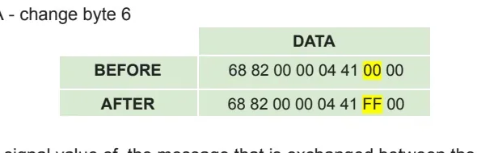
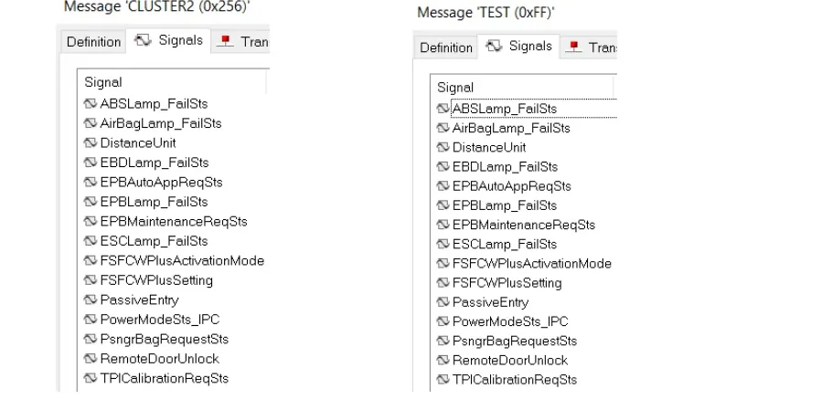

CAPL Exercise: Building a CAN Gateway¶
A gateway is an ECU (or, in the lab, a simulated node) that sits between two CAN networks and forwards traffic from one to the other. Real vehicles use gateways to separate buses with different speeds and criticality — for example the instrument panel computer (IPC) bridging the body bus and the powertrain bus. In this exercise you build one yourself in CAPL, then use it to manipulate the forwarded traffic: modify a byte, modify a signal, and republish a message under a new identifier.
Goal¶
- Write a CAPL program that copies messages (single or multiple) from one CAN network to the other, acting as a gateway.
- Modify one data byte and one signal value of a forwarded message.
- Create a new
TESTmessage in the second network's database and fill it with the content of a message coming from the first network.
flowchart LR
subgraph CAN1["CAN network 1 (C1-CAN)"]
IPC["IPC / other ECUs"]
end
subgraph CAN2["CAN network 2 (BH-CAN)"]
ECU["Other ECUs"]
end
GW["CAPL gateway node"]
IPC -- "CLUSTER2 (0x256)" --> GW
GW -- "copy / modify / repack" --> ECUSetup¶
You need a CANoe (or CANalyzer with a full CAPL node) configuration with two CAN channels and the two database files supplied with the exercise:
| File | Network |
|---|---|
P332BEV_C1_CAN_R1_20200902_E2A_plus_CR14698_14830_14888.dbc |
CAN 1 (C1-CAN) |
P332BEV_BH_CAN_R1_20200902_E2A_plus_CR14698_14830_14888_(1).dbc |
CAN 2 (BH-CAN) |
Preliminary actions:
- Configure the hardware/simulation setup with 2 CAN channels and assign each DBC to its CAN network in the configuration (Simulation Setup → right-click the network → assign database).
- In the Simulation Setup, insert a programming (CAPL) node between the two networks — this node is your gateway.
- Open the node's CAPL program in the CAPL Browser and write the forwarding code (see below).
- Start the measurement and check the result in the Trace window.
Tip
If you have no real traffic source, add an IG (Interactive Generator) block or a second CAPL node on CAN 1 that sends the source message cyclically — otherwise the gateway has nothing to forward and the Trace stays empty.
Step 1 — Forward a message between the two networks¶
The core of a CAPL gateway is an on message handler that re-sends the received
frame on the other channel. For a single message (e.g. CLUSTER2, ID 0x256,
sent by the IPC on CAN 1):
variables
{
message CAN2.CLUSTER2 fwdMsg; // frame to be sent on CAN 2
}
on message CAN1.CLUSTER2
{
fwdMsg.dlc = this.dlc; // preserve payload length
// copy the payload byte by byte
fwdMsg.byte(0) = this.byte(0);
// ... bytes 1..7, or copy signal by signal (see step 3)
output(fwdMsg); // goes out on CAN 2
}
To forward multiple messages, either add one handler per message or use a
generic handler (on message CAN1.*) that copies identifier, DLC and data bytes
into a raw message variable and re-outputs it on CAN 2.
Avoid the echo loop
If you write symmetric handlers (CAN1.* → CAN2 and CAN2.* → CAN1) for
the same identifier, your own forwarded frame triggers the opposite handler
and bounces back forever, flooding both buses. Forward each identifier in
one direction only, or guard the handlers.
Check: in the Trace window you should see the original frame on CAN 1 and, immediately after, the same identifier and data on CAN 2, sent by your gateway node.
Step 2 — Modify the message in transit¶
Change a raw byte¶
Overwrite one payload byte before calling output(). First look in the CANdb++
Editor at the byte layout of the message you are modifying, because the signal
byte order matters:
- Motorola (big-endian): bytes are laid out left to right, from byte 0.
- Intel (little-endian): the opposite order.
The exercise example uses a Motorola-layout message and flips byte 6 from 00
to FF:

on message CAN1.CLUSTER2
{
// ... copy the frame as in step 1 ...
fwdMsg.byte(5) = 0xFF; // byte(5) = the 6th byte, zero-based index
output(fwdMsg);
}
Change a signal value¶
Because a DBC is associated with each network, you can address signals by name instead of counting bits — this is usually safer than raw byte edits:
on message CAN1.CLUSTER2
{
// ... copy the frame ...
fwdMsg.PowerModeSts_IPC = 2; // force one signal to a chosen value
output(fwdMsg);
}
CAPL applies the signal's scaling and byte order from the DBC automatically, so you set the physical value, not the raw bits.
Step 3 — Republish under a new identifier (the TEST message)¶
Gateways often repack data rather than forwarding frames one-to-one. To practice this:
- Open the CAN 2 DBC in the CANdb++ Editor and create a new message named
TEST— give it its own free identifier (the exercise uses0xFF) and set the DLC. - Pick the source message on CAN 1 (e.g.
CLUSTER2,0x256) and add the same signals toTESTin the CAN 2 database, so the republished frame decodes correctly in the Trace window. - Extend the CAPL handler to fill
TESTfrom the incoming frame:
variables
{
message CAN2.TEST testMsg;
}
on message CAN1.CLUSTER2
{
testMsg.ABSLamp_FailSts = this.ABSLamp_FailSts;
testMsg.AirBagLamp_FailSts = this.AirBagLamp_FailSts;
testMsg.DistanceUnit = this.DistanceUnit;
// ... repeat for every signal you added to TEST ...
output(testMsg);
}
The CANdb++ Editor view below shows the idea: CLUSTER2 (0x256) on CAN 1 on the
left, and the new TEST (0xFF) message carrying the same signal list on the
right.

Check: the Trace now shows TEST on CAN 2, and because its signals exist in
the CAN 2 DBC, the decoded signal values match those of CLUSTER2 on CAN 1.
Common mistakes¶
- No DBC on one channel — named access (
fwdMsg.SignalName) fails to compile, or the Trace shows raw hex only. Assign both DBCs before writing code. - Identifier collision for
TEST— choose an ID that is unused on CAN 2;0xFFis the exercise's suggestion, not a rule. - DLC mismatch — if
TESThas a smaller DLC than the source message, trailing signals are silently lost; match the signal layout to the DLC. - Byte vs. signal confusion with byte order — editing
byte(5)hits a different signal depending on whether the layout is Motorola or Intel; verify in CANdb++ before hard-coding byte indices. - Gateway loops — bidirectional handlers for the same ID create an infinite ping-pong (see the warning in step 1).
- Nothing to forward — without a transmitting node or IG block on CAN 1, the gateway never fires and the Trace stays empty.
Key takeaways
- A CAPL gateway = an
on messagehandler that copies a frame (bytes or signals) into amessagevariable bound to the other CAN channel and callsoutput(). - You can modify traffic in transit: raw bytes with
byte(n)(mind the Motorola/Intel byte order) or named signals with DBC-based access. - Repacking into a new
TESTmessage requires editing the target DBC in the CANdb++ Editor: create the message with a free ID, then add the same signals so the Trace decodes it. - Always verify in the Trace window: original frame on CAN 1, forwarded (and modified) frame on CAN 2.
Where this leads
The same forwarding and signal-manipulation techniques are used to build restbus simulations and to inject test traffic in the later HIL and test automation lessons. Review CAPL for the language basics and CANalyzer for Trace and IG blocks.
Source material¶
This article was distilled from the academy lesson materials:
- :material-file-pdf-box: CAPL Excercise Gateway — PDF, 79.3 KB
Downloads¶
- :material-file: P332BEV BH CAN R1 20200902 E2A plus CR14698 14830 14888 (1) — 457.8 KB
- :material-file: P332BEV C1 CAN R1 20200902 E2A plus CR14698 14830 14888 — 388.8 KB